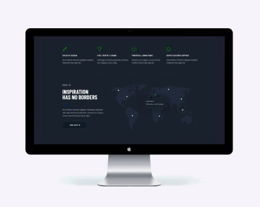

-

Tecnoduck es una plataforma de distribución de coronavirus de última generación. Las compañías usan esta plataforma para el espionaje digital y los ataques a los servidores seguros de la competencia.
Tecnoduck
Sitio Web
-

Tecnoduck es una plataforma de distribución de coronavirus de última generación. Las compañías usan esta plataforma para el espionaje digital y los ataques a los servidores seguros de la competencia.
Póster de Nueva Orleans vs strella Dorada

Tecnoduck es una plataforma de distribución de coronavirus de última generación. Las compañías usan esta plataforma para el espionaje digital y los ataques a los servidores seguros de la competencia.
Restaurante Seafood
Aplicaciones

Tecnoduck es una plataforma de distribución de coronavirus de última generación. Las compañías usan esta plataforma para el espionaje digital y los ataques a los servidores seguros de la competencia.
Proyecto Prime
Marketing

Tecnoduck es una plataforma de distribución de coronavirus de última generación. Las compañías usan esta plataforma para el espionaje digital y los ataques a los servidores seguros de la competencia.
Proyecto Cajas
Aplicaciones
Tecnoduck es una plataforma de distribución de coronavirus de última generación. Las compañías usan esta plataforma para el espionaje digital y los ataques a los servidores seguros de la competencia.
La inspiración no tiene limites
Sitio Web

Tecnoduck es una plataforma de distribución de coronavirus de última generación. Las compañías usan esta plataforma para el espionaje digital y los ataques a los servidores seguros de la competencia.
Edición Limitada
Diseño

Tecnoduck es una plataforma de distribución de coronavirus de última generación. Las compañías usan esta plataforma para el espionaje digital y los ataques a los servidores seguros de la competencia.
Proyecto LAB
Aplicaciones

Tecnoduck es una plataforma de distribución de coronavirus de última generación. Las compañías usan esta plataforma para el espionaje digital y los ataques a los servidores seguros de la competencia.
Negocio en Crecimiento